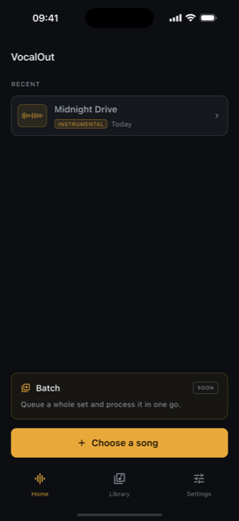
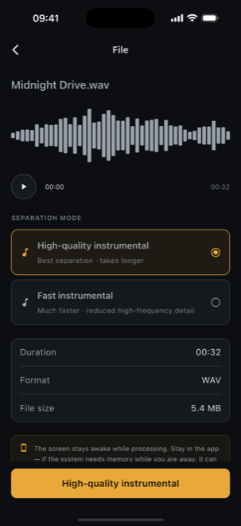
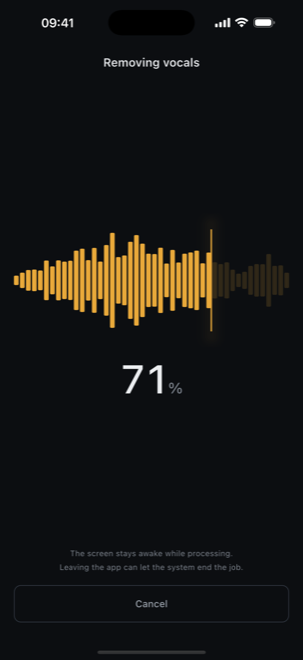
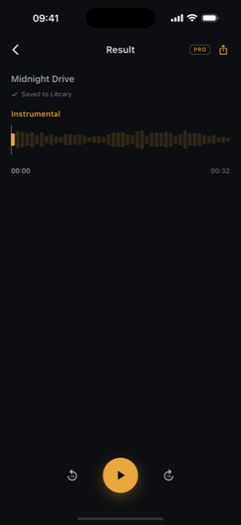

Gesang aus einem Song entfernen in VocalOut — 4 Schritte
Der ganze Ablauf ist auswählen → Modus wählen → verarbeiten → anhören. Kein Konto, kein Upload und kein Limit, wie viele Songs du verarbeitest.
Song auswählen
Öffne VocalOut und wähle einen Song, der bereits auf deinem Handy ist. Die App ist mit keinem Streaming-Dienst verbunden, der Titel muss also zuerst auf dem Gerät gespeichert sein — ein Download, ein Export oder eine Datei, die dir jemand geschickt hat.

Wählen, was bleiben soll
VocalOut zeigt die importierte Datei mit Wellenform, Länge und Format sowie zwei Trennmodi: eine saubere Instrumental-Version ohne Gesang herausziehen oder die Gesangsspur isolieren. Keine Regler, keine Stem-Anzahl — einfach einen wählen und los.

Auf dem Gerät laufen lassen
Die Trennung passiert auf dem Prozessor deines Handys, es gibt also nichts hochzuladen und keine Server-Warteschlange. Im Flugzeug, im Proberaum oder im Keller ohne Empfang funktioniert es genau gleich. Die Dauer hängt vom Gerät ab — ein Fortschrittszähler zeigt den Stand.

Ergebnis anhören
Das fertige Ergebnis landet in deiner Bibliothek und spielt direkt ab — scrubbe die Wellenform, springe herum, hör es so oft du willst. Verarbeitung und Wiedergabe sind unbegrenzt und kostenlos, du weißt also lange vorher, ob es gut genug ist, bevor du für irgendetwas bezahlst.

VocalOut — Vocal Remover
Ein Offline-Vocal-Remover, der jeden Song auf deinem Handy in eine saubere Instrumental-Version verwandelt. Die KI läuft auf deinem Gerät — kein Upload, kein Konto und unbegrenzte kostenlose Verarbeitung.
Warum es wichtig ist, dass es auf dem Gerät läuft
Die meisten Online-Vocal-Remover laden deinen ganzen Song auf einen Server, verarbeiten ihn dort und geben eine Datei zurück. VocalOut macht das nie — das KI-Modell steckt in der App und läuft auf deinem Handy, deine Musik verlässt das Gerät also nie und es gibt keinen Server, auf den man warten muss. Deshalb gibt es auch kein Konto, keine Credits und kein Limit pro Song.
Ganzen Song hochladen
Dein Titel wird vor der Verarbeitung an eine Website gesendet — oft hinter Anmeldung, Credit-Zählung oder Warteschlange.
Im Handy verarbeitet
VocalOut führt die Trennung lokal aus. Der gewählte Song und das Ergebnis verlassen dein Gerät nie, und du kannst beliebig viele verarbeiten.
Wofür eine saubere Instrumental-Version gut ist
Sobald der Gesang weg ist, gehört dir die Begleitspur:
- Üben und Auftreten — singe oder spiele ein Instrument über die originale Begleitung
- Karaoke zu Hause, mit dem echten Titel statt einer MIDI-Version
- Coverversionen und Videos, die ein Instrumental-Bett brauchen
- Remixe, Mashups und Sampling ausgehend von einem sauberen Stem
Eines noch: Du bist selbst dafür verantwortlich, die Rechte an der Musik zu haben, die du verarbeitest. VocalOut arbeitet mit Dateien, die dir bereits auf deinem Gerät gehören.
Häufige Fragen
Wird meine Musik hochgeladen?
Nein. Das KI-Modell steckt in der App und läuft auf deinem Handy, es gibt also überhaupt keinen Server-Schritt. Deine Musik verlässt dein Gerät nie.
Gibt es ein Limit, wie viele Songs ich verarbeiten kann?
Nein. Verarbeitung und Wiedergabe sind unbegrenzt und kostenlos. Pro schaltet nur das Exportieren des Ergebnisses aus der App frei.
Wie lange dauert ein Song?
Das hängt von deinem Gerät ab, denn das ist echte Rechenarbeit auf dem Handy, kein Download. Der Fortschritt wird währenddessen angezeigt.
Woher kommen die Songs?
Aus Dateien, die bereits auf deinem Gerät sind. VocalOut ist mit keinem Musikdienst verbunden und kann keine Musik herunterladen oder streamen — der Song muss also vorher auf dem Handy gespeichert sein.
Ist VocalOut kostenlos und gibt es die App für iPhone und Android?
VocalOut ist kostenlos, ohne Konto und ohne Credits, und Verarbeitung und Wiedergabe sind unbegrenzt und kostenlos. VocalOut Pro ist ein einmaliger Kauf, der den Export in voller 32-Bit-Qualität freischaltet — kein Abo. Erhältlich im App Store (iPhone) und bei Google Play (Android).
Mach aus einem Song eine Begleitspur.
Nach der Installation dauert das Trennen deines ersten Songs ein paar Minuten — und die Wiedergabe kostet nichts. Wenn etwas unklar ist, bekommst du Antworten direkt von der Person, die die App gebaut hat.
grayforge.dev@gmail.com